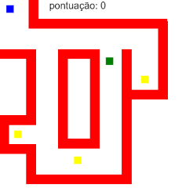

A EVOLUÇÃO DO PAC MANO
FEVEREIRO-MARÇO 2023
O jogo "PAC MANO" foi criado como um jogo casual criado por diversão em fevereiro sendo um jogo inspirado por PACMAN com uma gameplay simples, só precisando pegar cubos amarelos enquanto foje de cubos verdes.
PAC MANO 1
O primeiro jogo é bem simples com só 4 coisas: paredes, jogador, moeda, inimigo. Com poucos elementos foi um jogo bem simples mas abriu portas para outros elementos.
PAC MANO 2

O segundo jogo adicionou muito mais, com varias mecanicas novas como a parede cinza onde o jogador pode atravesar.
PAC MANO 3

O terceiro e o final jogo adiciona o pai do jorge (q é o cubo verde grande)